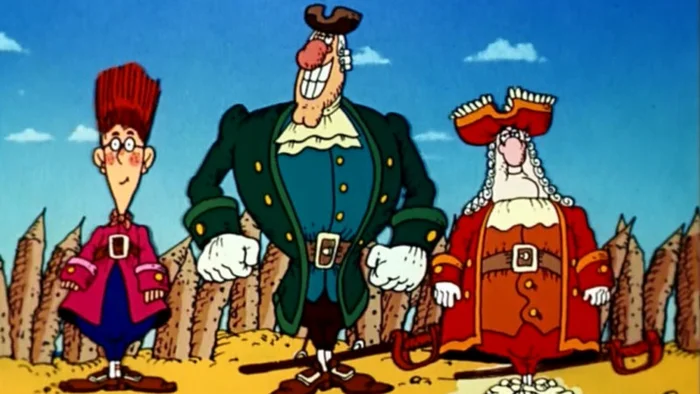

Flex
TREASURE ISLAND CHARACTERS
Treasure Island is an adventure novel by Scottish author Robert
Louis Stevenson, telling a story of "buccaneers and buried
gold". It is considered a coming-of-age story and is noted for
its atmosphere, characters, and action. The novel was originally
serialised from 1881 to 1882 in the children's magazine Young
Folks, under the title Treasure Island or the Mutiny of the
Hispaniola, credited to the pseudonym "Captain George North". It
was first published as a book on 14 November 1883 by Cassell &
Co. It has since become one of the most often dramatized and
adapted of all novels, in numerous media. Since its publication,
Treasure Island has had significant influence on depictions of
pirates in popular culture, including elements such as deserted
tropical islands, treasure maps marked with an "X", and
one-legged seamen with parrots perched on their shoulders. It is
considered a coming-of-age story and is noted for its
atmosphere, characters, and action. The novel was originally
serialised from 1881 to 1882 in the children's magazine Young
Folks, under the title Treasure Island or the Mutiny of the
Hispaniola, credited to the pseudonym "Captain George North". It
was first published as a book on 14 November 1883 by Cassell &
Co. It has since become one of the most often dramatized and
adapted of all novels, in numerous media. Since its publication,
Treasure Island has had significant influence on depictions of
pirates in popular culture, including elements such as deserted
tropical islands, treasure maps marked with an "X", and
one-legged seamen with parrots perched on their shoulders.

Ukrainian animated film in two parts based on the 1883 novel
with the same name by Robert Louis Stevenson. It was created
by order of the USSR State Television and Radio Broadcasting
Company by the Ukrainian studio Kievnauchfilm.
Here they are from left to right: Jim Hawkins, Dr Livesey and
Squire Trelawney